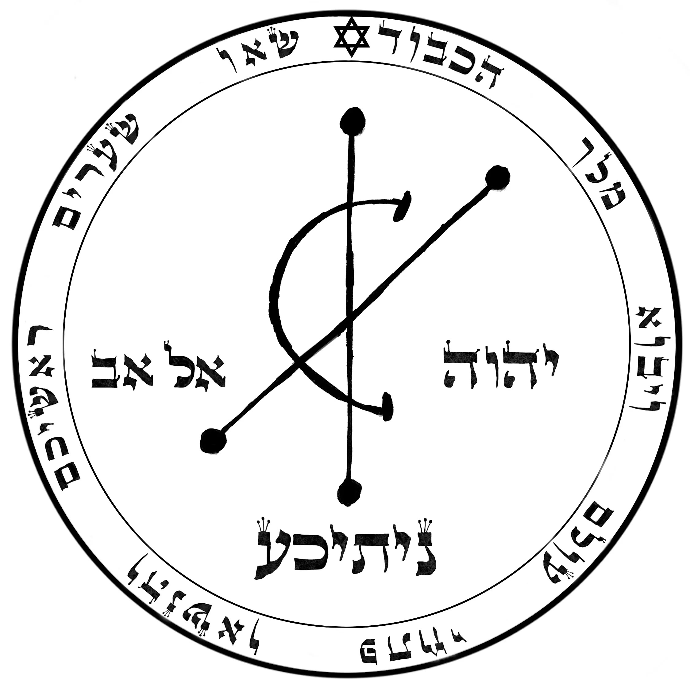
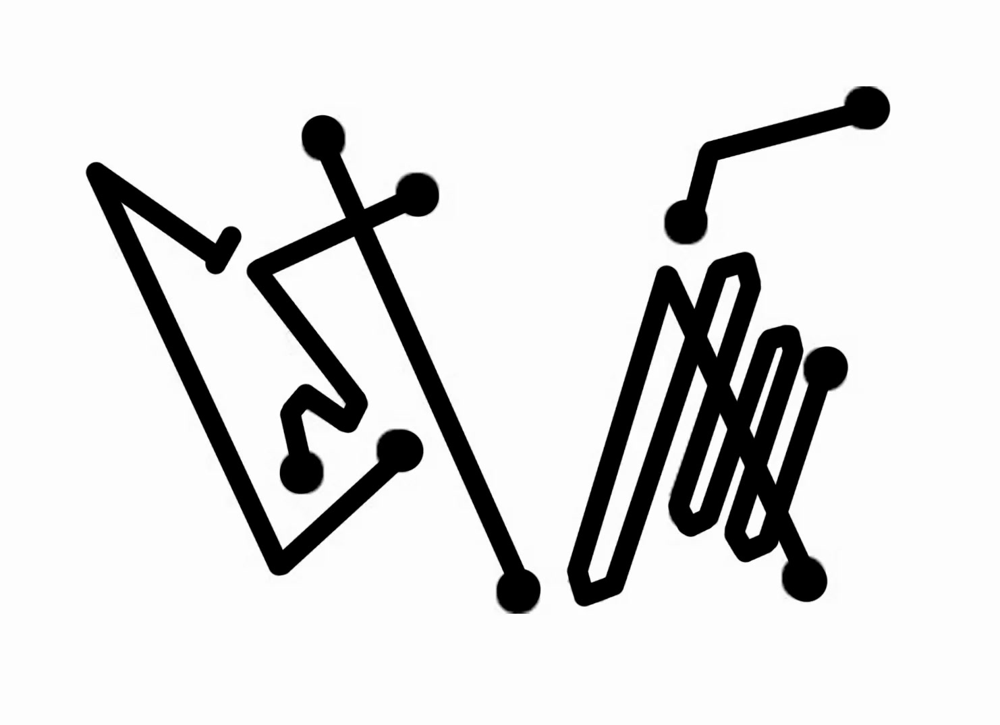

Buy a notebook. It's that easy. You could spend hours making your own notebook out of fresh parchment, gluing it together with traditional binding methods, but it's far quicker to buy a notebook. It will work well.
买一个笔记本。就这么简单。你可以花几个小时用新鲜的羊皮纸制作自己的笔记本，用传统的装订方法把它粘合起来，但买一个笔记本要快得多。它会很好用。
If you can buy something that looks or feels vaguely magickal to you, so much the better, but it isn't vital. Ideally, there should be no lines on the paper, but again, it is not vital.
如果你能买到一些对你来说看起来或感觉上有些许魔法意味的东西，那就更好了，但这并非至关重要。理想情况下，纸上不应该有横线，但同样，这并非至关重要。
You should paint the front cover gray or silver, and paint the back cover orange. You can stick on card or paper if it's easier. You can do this using cheap paints and a basic brush. You can get what you need at an art shop or just look for something cheap around town. Nothing fancy is required. These colors act almost like a battery, drawing magickal energy through the book when you perform the ritual.
你应该把封面涂成灰色或银色，把封底涂成橙色。如果更容易的话，你可以贴上卡纸或纸张。你可以用便宜的颜料和一把普通的刷子来做这件事。你可以在美术用品店买到你需要的东西，或者就在城里找些便宜的。不需要什么花哨的东西。这些颜色几乎像电池一样，在你进行仪式时通过书本吸引魔法能量。
The only problem you will face is that it may take several coats of paint to cover up the writing and logos on the cover. If that's what it takes, then keep going until all you have are clear gray and orange covers.
你唯一会面临的问题是，可能需要涂好几层颜料才能盖住封面上的文字和标志。如果需要这样做，那就继续涂，直到你得到清晰的灰色和橙色封面为止。
A shortcut is to glue white paper or card onto the cover of your notebook, and then paint that, or use colored card or paper. It doesn't have to be too special. The inside of the cover does not need to be colored.
一个捷径是在笔记本的封面上粘贴白色纸张或卡纸，然后在其上涂色，或者使用有色卡纸或纸张。不必太特别。封面的内侧不需要涂色。
You may have a thousand questions about the notebook - what size, what style of binding, what weight and so on. Really, you don't need to worry. So long as you have a notebook of some kind, with pages to write on, and a gray cover, with an orange back cover, the magick will work.
你可能对笔记本有一千个问题——什么尺寸、什么装订样式、什么重量等等。真的，你不需要担心。只要你有一个某种类型的笔记本，有可以书写的页面，一个灰色的封面，一个橙色的封底，魔法就会起作用。
On the front cover, you will need a copy of the following sigil. It can be drawn by hand, photocopied or printed out from the website.
在封面上，你需要以下符印的副本。它可以手绘、影印或从网站打印出来。

For most people, drawing is out of the question, so it's completely OK to photocopy it from the book. If you're using the e-book, then you can download the image and print it out, or even photograph the e-book and print that out.
对于大多数人来说，绘画是不可能的，所以从书中影印是完全可以的。如果你使用的是电子书，那么你可以下载图像并打印出来，甚至可以拍摄电子书然后打印出来。
You can find the image here:
你可以在这里找到图片：
http://galleryofmagick.com/images/
You can stick the printout on the front of your Cashbook, and that will do fine. You might want to trace over the printed image, lightly, with a pen or pencil, to connect yourself to the sigil. It might look something like this:
你可以把打印出来的图片贴在你的现金簿封面上，这样就可以了。你可能想用钢笔或铅笔轻轻地描摹打印出来的图像，让自己与符印连接起来。它看起来可能像这样：
If you have the confidence, you can draw this as it's shown above. Use pen, pencil, or any kind of ink. As a rule, it's best to use black ink or dark pencil.
如果你有信心，可以像上面那样画出来。用钢笔、铅笔或任何类型的墨水。通常，最好使用黑色墨水或深色铅笔。
Copying the Hebrew words might take some practice if you're not used to writing in Hebrew. Practice on blank paper first. But even if you make a bit of a mess, it doesn't matter, because you will soon perform a brief ritual that dedicates the book to Nitika.
如果你不习惯书写希伯来文，抄写希伯来文字可能需要一些练习。先在白纸上练习。但即使你弄得有点乱，也没关系，因为你很快就会进行一个简短的仪式，将这本书献给尼蒂卡。
If you cannot copy exactly, don't worry. If you get the basic shapes of the letters right, it will work. And if you prefer to print out or photocopy, that is also fine, but it does help if you then take the time to draw lightly over the image with a pencil or pen, to connect yourself to the shapes and images. You do not need to be able to understand the various divine names and words of power, so long as you can see them.
如果你不能完全复制，别担心。只要你把字母的基本形状画对，它就会起作用。如果你更喜欢打印或复印，那也没关系，但如果你之后花时间用铅笔或钢笔轻轻描摹图像，将自己与形状和图像联系起来，这会有帮助。你不需要能够理解各种神名和力量之语，只要你能看到它们就行。
On the orange back cover draw or glue a copy of this sigil:
在橙色的封底上画上或粘贴这个符印的副本：

This should again be drawn using black ink, pencil or pen, or feel free to use a printout. Once again, if you use a photocopy or printout, take the time to trace over the lines lightly with a pen or pencil.
这同样应该用黑色墨水、铅笔或钢笔绘制，或者随意使用打印件。再次强调，如果你使用影印件或打印件，请花时间用钢笔或铅笔轻轻描摹线条。
Open your book and on the first blank page of the book write the following words of power:
打开你的书，在书的第一张空白页上写下以下力量之语：
NAH-KAH EE-AH-OH-EH
These words of power are a statement that means it is your will to recognize God, and this gives you the authority to work the magick.
这些力量之语是一种声明，意思是你有意愿承认神，这赋予你施行魔法的权威。
Once you have written that down, say the words out loud. The AH sound appears in a lot of these words, and this AH is like the a in father. The words are pronounced as follows.
写下这些之后，大声说出这些词语。AH（啊）这个音在很多词中出现，这个 AH 就像 father 中的 a。这些词的发音如下：
NAH sounds like ah with n at the front.
KAH sounds like ah with k at the front.
EE sounds like me without the m.
AH is the word ah.
OH is the word oh.
EH sounds like yeah without the y.
Accurate pronunciation is not important, but I know people worry about it, so I'm making it as clear as possible. Remember that a bold and confident attitude is far more important than correct pronunciation. If you need more details, you can find them on the Pronunciation and Spelling FAQ page at www.galleryofmagick.com where there's a video showing you exactly how to say the words.
准确的发音并不重要，但我知道人们会担心，所以我尽可能说清楚。记住，大胆自信的态度远比正确的发音重要。如果你需要更多细节，可以在 www.galleryofmagick.com 的“发音与拼写常见问题解答”页面找到，那里有一个视频向你展示如何准确地说出这些词。
You've now built your Magickal Cashbook, and all you need to do is empower it. Then you can begin to write your petitions in the book to manifest money.
你现在已经制作好了你的魔法现金簿，你所需要做的就是为它赋能。然后你就可以开始在书中写下你的祈愿以显化金钱。